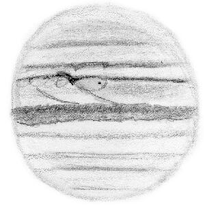
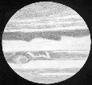

SJAA
Ephemeris
|
SJAA Ephemeris |
The Shallow SkyAkkana Peck |
The twin giants of Jupiter and Saturn rule the October sky, high in the sky and visible most of the evening.
Jupiter reaches opposition on October 23, and outshines everything else in this month's sky. Its light and dark bands (in particular, the northern and southern equatorial belt, denoted NEB and SEB in Jupiter-watcher parlance), and its moons and their tiny, intensely black shadows on the planet's disk, should be visible in any telescope. Transits of the moons themselves are more difficult to see, but are still possible even in telescopes as small as 80mm.
It's fun to watch moon and shadow transits just before and after opposition: the moon and shadow are so close that they overlap. For example, the Io transit on the night of October 19 looks like it should be an excellent one, with Io and its shadow following the Great Red Spot across Jupiter's disk.
|  |
The Great Red Spot, or GRS for short, is great indeed, but isn't very red; look for a split in the SEB where the belt separates into two pieces which encircle a large light-colored oval area. This area is known as the GRS Hollow, and is sometimes the only visual indication of the GRS itself. Steadier seeing and good optics can show more, including swirls inside the GRS, and white ovals preceding and following the GRS hollow indicating turbulence caused by the massive long-lasting storm that is the GRS.
An SJAA member has reported that this year, the NEB seems unusually active, with dark spots and festoons (long trailing wisps extending into the light-colored equatorial zone)
You can get transit times for Jupiter's moons and for the GRS in magazines like Sky & Telescope, or use my Java applet: www.shallowsky.com/jupiter.html
Two other excellent Jupiter observation links on the web are:
|  |
When you get tired of watching Jupiter, switch your attention to Saturn, the bright star below and to the left of Jupiter. Saturn's rings show a generous tilt, though they are not quite as open as they were a few months ago, and will present a dazzling sight in any telescope. Look for Cassini's division, a narrow gap between the two main (A and B) rings, and for the semitransparent C or "Crepe" ring inside the main rings. In steadier seeing, try for the much more difficult gaps in the outer A ring; these gaps seem to change with time and not all observers see them the same way, so take a look and see what you can see there!
Mars is low in the western sky at nightfall, but that doesn't mean it's not worth observing: on the 18th, it passes near the Lagoon nebula, and on the 24th it will pass near the globular cluster M28. Though Mars itself is too far away to show much detail now, it should be a fun low-power target as it passes close to these other objects.
Uranus and Neptune are still observable, close together in central Capricornus. Pluto sets earlier, and is really too low to be a good target this month. Mercury is back in the evening sky, but just barely; it'll be a difficult find. Venus, near half phase now, shines in the morning sky.
| Akkana Peck; last updated: February 05, 2002 | Prev Next |